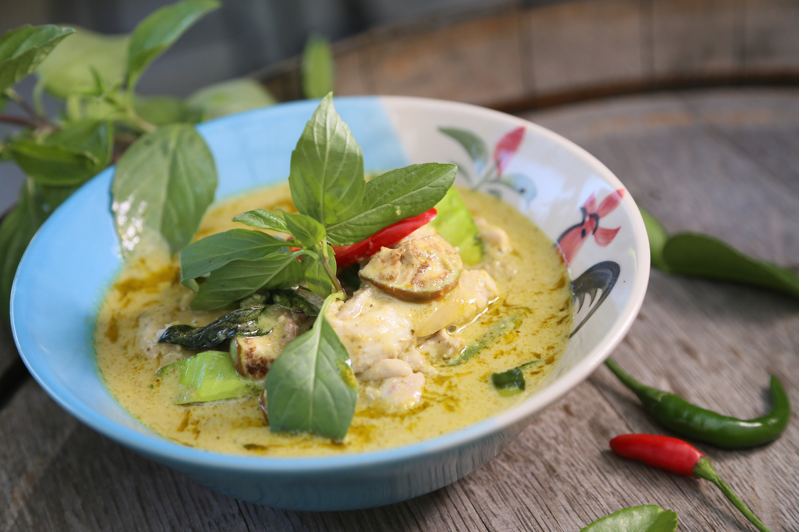

Home
Chicken in Coconut and Lime

Description
A healthy and refreshing chicken dish with Thai roots. Lots of citrus flavours and creamy coconut with a slight chilli taste.
This dish has been a staple in my kitchen for a while and is very easy to create.
Ingredients
- Chicken breasts or thighs
- Coconut Milk
- Coriander
- Spring Onion
- Fresh Chilli (Preferably Green, but Red is also OK)
- Limes
- Fish Sauce
Steps
- Cut chicken into cubes and marinade in Lime juice for a minimum of 30 mins, overnight preferable.
- Slice spring onions into long thin slices.
- Add chicken to a wok with oil.
- Once chicken is cooked through, add the coconut milk.
- Add half the spring onions, half the coriander and the chilli.
- Once cooked through, serve with rice and garnish with the remaining onions, coriander and chili.